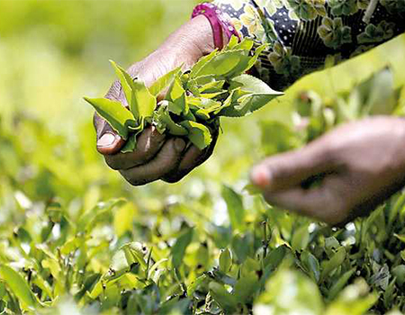
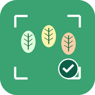
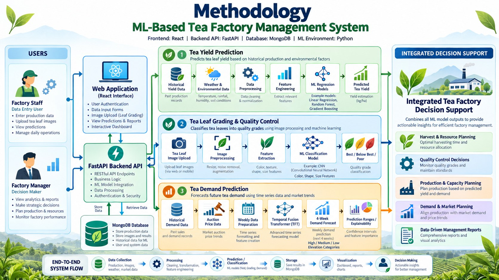
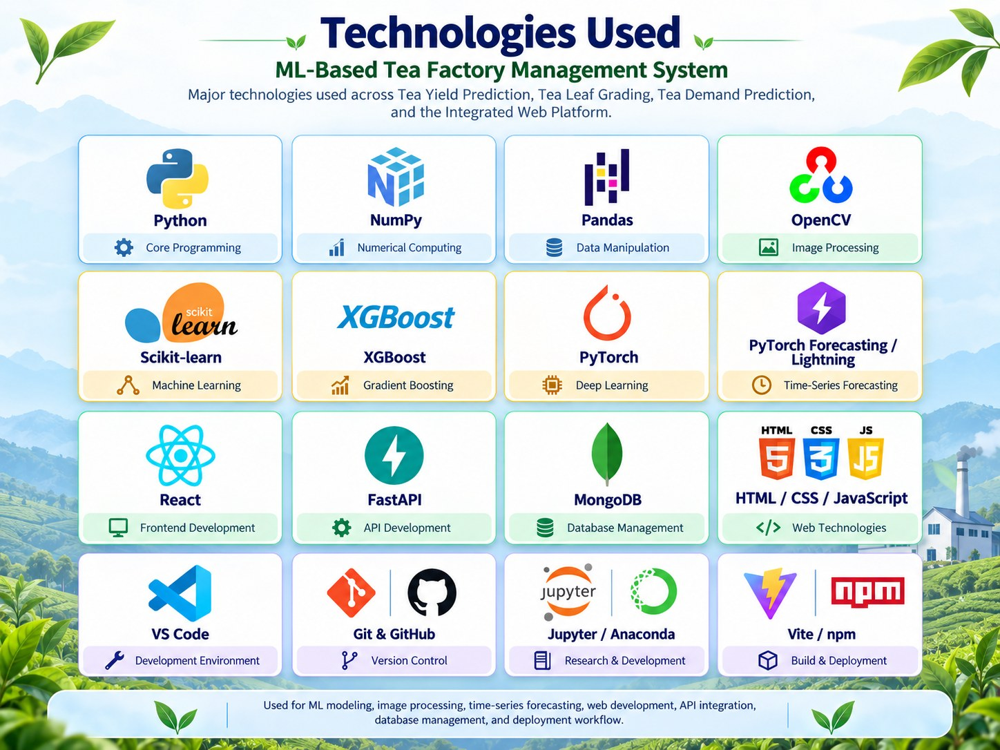

ML-Powered Tea Factory Management System
A web-based machine learning platform that predicts tea yield, grades tea leaves into quality categories, and forecasts four-week tea demand for smarter factory decisions.
Explore the project Download documentsProject scope
The ML-Powered Tea Factory Management System is proposed to improve the efficiency, accuracy and productivity of tea factory operations through machine learning.
The research is divided into three main components: Tea Yield Prediction, Smart Tea Leaf Grading, and Tea Demand Forecasting. Together they support harvesting decisions, maintain tea leaf quality, and improve production and market planning.
The proposed system integrates machine learning, image processing, predictive analytics and explainable forecasting into a web-based platform to support data-driven decision-making in the tea industry.
Tea Yield Prediction
Uses historical production and environmental data to forecast tea yield and support resource allocation.
Smart Tea Leaf Grading
Applies image processing and machine learning to classify leaves as Best, Below Best or Poor.
Tea Demand Forecasting
Uses Temporal Fusion Transformer (TFT) models and auction price data to forecast future tea demand.

Demo video
Literature review
Previous studies have used machine learning for crop yield prediction, computer vision for tea leaf grading, and deep learning for demand forecasting. These methods improve accuracy and reduce manual work.
However, most studies focus on individual tasks rather than integrated tea factory management. Our research combines Tea Yield Prediction, Smart Tea Leaf Grading and Tea Demand Forecasting into one intelligent system.
Research gap
Currently available research and tools have the following gaps.
Limited accurate tea yield prediction
Lack of reliable field-level and seasonal tea yield forecasting using historical production and environmental data.

Inconsistent tea leaf quality grading
Dependence on manual inspection and limited comparative evaluation of ML models using leaf color, shape and size features.
Limited explainable tea demand forecasting
Insufficient evidence on using auction prices to improve four-week customer demand forecasting with uncertainty estimates.
Lack of integrated decision support
Limited integration of yield prediction, leaf quality grading and demand forecasting into a unified tea factory management platform.
What makes this different: Our proposed system integrates tea yield prediction, automated tea leaf quality grading, and explainable four-week tea demand forecasting into a unified machine learning-based platform. By combining environmental data, image-based quality analysis, and auction price information, the system provides comprehensive, data-driven decision support for tea factory operations.
Research problem
How can machine learning technologies be integrated to improve tea yield prediction, automate tea leaf quality grading, and accurately forecast tea demand to enhance productivity, efficiency and decision-making in the tea industry?
Research objectives
Main objective: To improve the productivity, efficiency and decision-making of the tea industry through an integrated ML-Powered Tea Factory Management System.
Tea Yield Prediction
To forecast tea yield using historical production and environmental data for effective harvesting and resource planning.
Smart Tea Leaf Grading
To automate tea leaf quality classification using image processing and machine learning techniques.
Tea Demand Forecasting
To forecast four-week tea demand using explainable machine learning and auction price information.
Integrated management system
To develop a unified web-based platform supporting data-driven tea factory planning and decision-making.
Main research components and functionalities
Tea Yield Prediction
- Predict tea yield using historical production, rainfall, temperature, humidity and other environmental factors.
- Compare regression models such as Linear Regression, Random Forest and Gradient Boosting to support harvesting and resource planning.
Smart Tea Leaf Grading
- Analyze tea leaf images using image processing to extract color, shape and size characteristics.
- Classify tea leaves into Best, Below Best and Poor categories using trained machine learning classifiers.
Tea Demand Forecasting
- Forecast weekly tea demand for the next four weeks using historical demand data and auction prices.
- Apply the Temporal Fusion Transformer (TFT) to generate demand forecasts, prediction ranges and explainable insights.
Integrated tea factory management system
- Integrate all three machine learning components into a web-based platform using React, FastAPI and MongoDB.
- Provide prediction results, quality grading information, interactive dashboards and reports for factory decision-making.
Methodology
The system combines three machine learning components in one web platform. Users enter data and upload leaf images through a React interface, a FastAPI backend runs the Python ML models, and results are stored in MongoDB. Predictions, grades and forecasts then feed dashboards and reports for factory staff and managers.
End-to-end flow: data collection → processing → prediction / classification → storage → visualization → decision making.

Click the diagram to open it full size.
Tea Yield Prediction
Historical yield data and weather and environmental data are preprocessed, features are engineered, and regression models (Linear Regression, Random Forest, Gradient Boosting) estimate yield in kg/ha.
Smart Tea Leaf Grading
Leaf images are uploaded and preprocessed (resize, noise removal, augmentation). Color, texture, shape and size features feed a classification model that outputs Best, Below Best or Poor.
Tea Demand Forecasting
Past demand and auction price data are prepared as weekly series. A Temporal Fusion Transformer produces a four-week forecast with prediction ranges, feature importance and High / Medium / Low demand categories.
Technologies used

Milestones
Timeline in brief.
Project Proposal Report
The proposal report for the project. It describes the project and outlines the plans and scope.
Project Proposal Presentation
The proposal was formally presented.
Progress Presentation 1
The first progress presentation. Progress was shared and a prototype was showcased to prove the concept.
Progress Presentation 2
The second progress presentation. Progress was shared and a more refined, near-complete product was showcased.
Draft Thesis
Shows the entire structure of our academic work in one place.
Website Assessment
This website, developed as a static site in an academic format. It summarizes the project so a viewer gets an overall idea of the work.
Final Presentation & Viva
The final presentation and viva, where the completed project details are shared and the finished product is showcased.
Research Paper
A research paper written using all the knowledge gathered while conducting the research.
Final Thesis
The comprehensive academic document presenting the culmination of our research, critical analysis and scholarly conclusions.
Documents
Each button opens a Google Drive folder where you can view and download the files, listed in date order.
Topic Assessment
Submitted 11 February 2026Project Charter
Submitted 24 February 2026Project Proposal
Submitted 21 March 2026Research Poster
Submitted 25 September 2026Draft Thesis
Submitted 11 October 2026Research Paper
Submitted 23 October 2026Final Thesis
Submitted 28 October 2026Research Logbook
Submitted 1 December 2026Check List (1)
Check List (2)
Presentations
Project Proposal
Presented 30 April 2026Progress Presentation I
Presented 12 May 2026Progress Presentation II
Presented 1 September 2026Final Presentation
Presented 20 October 2026Our team
Supervisors
Mr. Dinith Primal
Supervisor
Mrs. Tharushi Rubasinghe
Co-supervisor
Research team
Sankalpa B B T
Team Leader
Tea Yield Prediction
Wickramage M P W
Member
Smart Tea Leaf Grading
Subasinghe S A N
Member
Tea Demand Forecasting